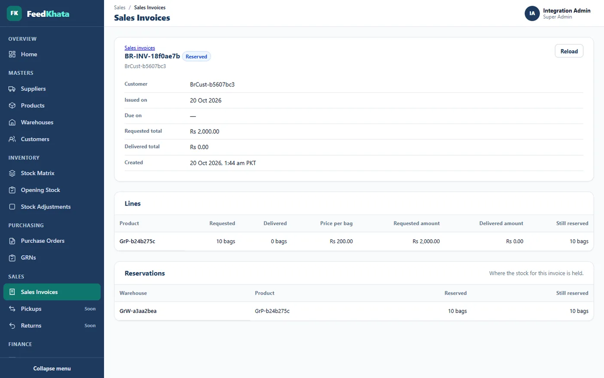

Feed Khata
Back-office software for feed traders: stock, sales, payments and demand forecasts in one place.

Overview
The problem
A feed-trading business has to keep stock, credit sales, payments and approvals in sync every day.
The solution
One system covers purchasing to payment, holds stock for each invoice and forecasts what to restock.
My role
Product design, full-stack development and rollout to daily use with the business.
Six connected modules
Purchasing
Purchase orders and goods received notes.
Inventory
Stock per location, every movement traced.
Sales & pickups
Invoices reserve stock until it is collected.
Finance
Payments, customer balances and expenses.
Approvals
Returns and adjustments need sign-off.
Reports
Business reports with a full audit trail.
How it works
Demand forecasting
AI can explain a forecast in plain words; it never changes the numbers.
Screens


Tech stack
Challenges solved
Stock that stays right
Each invoice reserves its bags in one step, so two sales can never take the same stock.
Changes with sign-off
Returns and stock adjustments go through approval, keeping the books trustworthy.
Forecasts people trust
Clear statistics produce the numbers; AI only explains them.